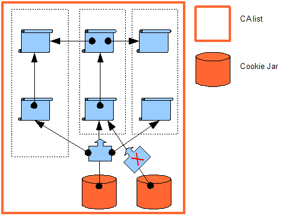
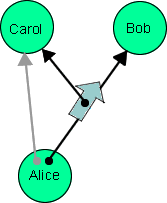
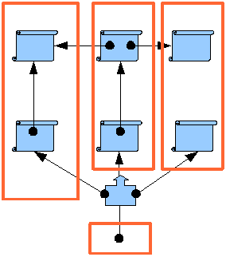
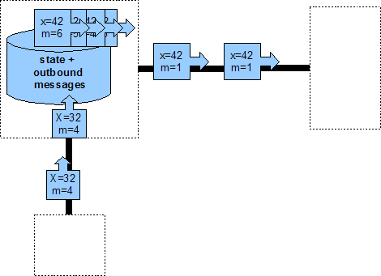
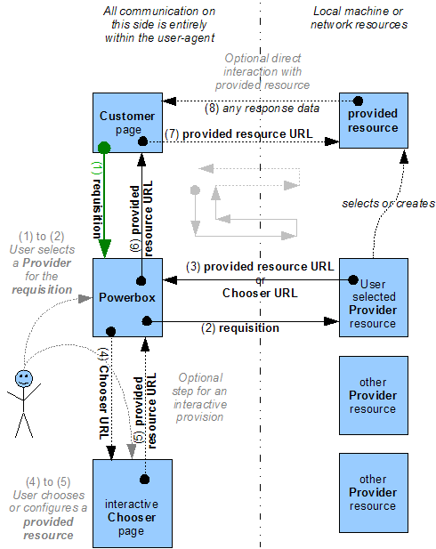

Tyler Close Google, engineer Waterken Server, project leader

https://example.org
(scheme)://(host):(port)
://
:

https://sha-256-bcn57qkphyqkjfrt.yurl.net
(scheme)://(algorithm)-(fingerprint).yurl.net:(port)
-
.yurl.net:
./#s=4mrz4gknjpc6zi
./#s=(permission token)
./#s=
https://sha-256-bcn57qkphyqkjfrt.yurl.net/#s=4mrz4gknjpc6zi

GET
POST
?x=4mrz4gknjpc6zi&w=2&m=1
?x=(session-id)&w=(window-id)&m=(message-id)
?x=
&w=
&m=
DEMO: at most one withdrawal

DEMO: stop the world
When responding to a request requires making another request, the response must be a promise.
/#o=&s=vwvrzxa64rw6bb
http://waterken.sf.net/web_send/#Q
http://waterken.sf.net/javadoc
http://www.w3.org/TR/UMP/

DEMO: a sneak peek at a browser powerbox
The existing Web infrastructure provides good support for DCDP and is being evolved to provide excellent support. A revolution of our perspective might be needed, but not of our tools.